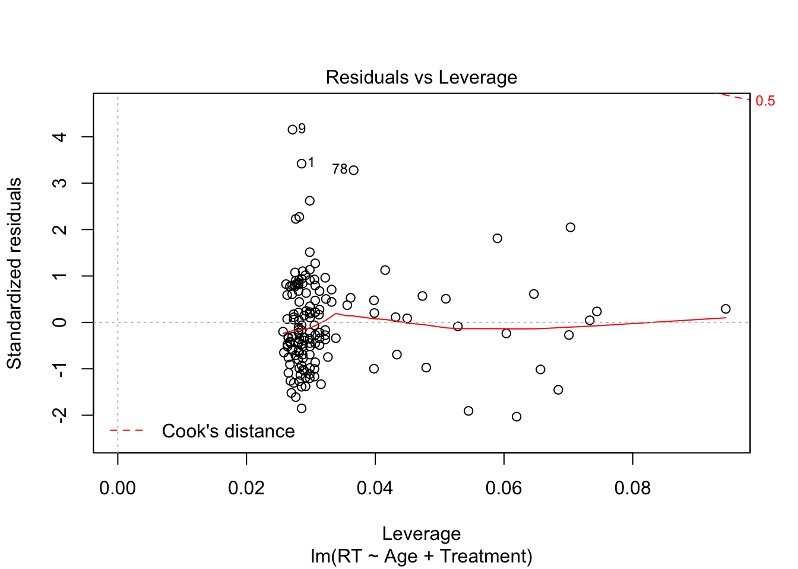

##
## Call:
## lm(formula = RT ~ Age * Treatment, data = TrimmedFullRTSet)
##
## Residuals:
## Min 1Q Median 3Q Max
## -7.064 -2.394 -0.653 2.345 15.521
##
## Coefficients:
## Estimate Std. Error t value Pr(>|t|)
## (Intercept) 8.52461 1.50220 5.675 7.53e-08 ***
## Age 0.03187 0.05146 0.619 0.537
## TreatmentDepletion -2.90630 2.15215 -1.350 0.179
## TreatmentInteraction -3.18588 2.13039 -1.495 0.137
## TreatmentMWR -2.02844 2.29064 -0.886 0.377
## Age:TreatmentDepletion 0.08348 0.07325 1.140 0.256
## Age:TreatmentInteraction 0.02720 0.07172 0.379 0.705
## Age:TreatmentMWR -0.04071 0.08271 -0.492 0.623
## ---
## Signif. codes: 0 '***' 0.001 '**' 0.01 '*' 0.05 '.' 0.1 ' ' 1
##
## Residual standard error: 3.804 on 142 degrees of freedom
## (3 observations deleted due to missingness)
## Multiple R-squared: 0.1408, Adjusted R-squared: 0.09844
## F-statistic: 3.324 on 7 and 142 DF, p-value: 0.002621Eliminating the outlier reduces the predicted response by over two seconds. To reiterate, the intercept represents the expected response time for a person aged zero in the Baseline Treatment. Looking at Treatment Interaction, there is no longer a significant effect. In fact, there are no significant effects between age and response time, any of the treatments and response time, or the interaction of age and any of the treatments on response time.
While the distribution of the data points appear to be the same after eliminating the outlier, notice the change in scale. The residuals vs. fitted y-axis upper limit decreases from 30 to 15, 8 to 4 in the normal Q-Q, 2.5 to 2 in the scale-location, and 8 to 4 in the residuals vs. leverage. These changes emphasize the extent to which the response time differed from the rest.
##
## Call:
## lm(formula = RT ~ Age + Treatment, data = TrimmedFullRTSet)
##
## Residuals:
## Min 1Q Median 3Q Max
## -7.4705 -2.4451 -0.6117 2.2380 15.5570
##
## Coefficients:
## Estimate Std. Error t value Pr(>|t|)
## (Intercept) 7.91316 0.94705 8.356 4.82e-14 ***
## Age 0.05491 0.02683 2.047 0.042488 *
## TreatmentDepletion -0.65366 0.87180 -0.750 0.454603
## TreatmentInteraction -2.46031 0.88948 -2.766 0.006414 **
## TreatmentMWR -3.00737 0.87825 -3.424 0.000802 ***
## ---
## Signif. codes: 0 '***' 0.001 '**' 0.01 '*' 0.05 '.' 0.1 ' ' 1
##
## Residual standard error: 3.798 on 145 degrees of freedom
## (3 observations deleted due to missingness)
## Multiple R-squared: 0.1255, Adjusted R-squared: 0.1014
## F-statistic: 5.205 on 4 and 145 DF, p-value: 0.000603The expected response time for a person aged zero in the baseline is 7.913, which increases by 0.055 seconds per year added at .05 level (p-value = .042). From this we can conclude age has a significant impact on response time. Additionally, we see no change in the direction of the significance of effects in the Interaction and Moral Wiggle Room Treatments, but do see a slight decrease in the p-value from 0.002 to 0.006 in the Interaction and 0.0004 to 0.0008 in the Moral Wiggle Room Treatment. These p-values, however, remain highly significant.

There were no significant changes in the graphs, and the data appear similar to the plots above.